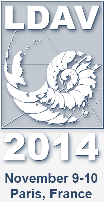
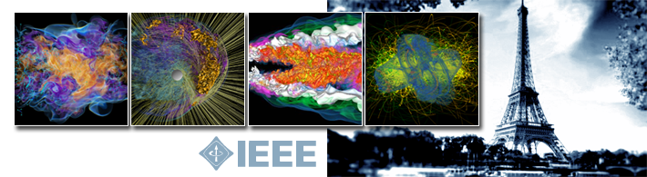

<!DOCTYPE html>
<html xmlns="http://www.w3.org/1999/xhtml" xml:lang="en-gb" lang="en-gb" dir="ltr">
<head>
  <meta name="viewport" content="width=device-width, initial-scale=1.0" />
  	<base href="" />
	<meta http-equiv="content-type" content="text/html; charset=utf-8" />
	<meta name="author" content="Erik Jorgensen" />
	<title>Program</title>
	<link href="templates/ldav2014/favicon.ico" rel="shortcut icon" type="image/vnd.microsoft.icon" />
	<link href="templates/ldav2014/css/template.css" rel="stylesheet" type="text/css" />
	<script src="media/jui/js/jquery.min.js" type="text/javascript"></script>
	<script src="media/jui/js/jquery-noconflict.js" type="text/javascript"></script>
	<script src="media/jui/js/jquery-migrate.min.js" type="text/javascript"></script>
	<script src="media/system/js/caption.js" type="text/javascript"></script>
	<script src="media/jui/js/bootstrap.min.js" type="text/javascript"></script>
	<script src="templates/ldav2014/js/template.js" type="text/javascript"></script>
	<script type="text/javascript">
jQuery(window).on('load',  function() {
				new JCaption('img.caption');
			});
jQuery(function($){ $(".hasTooltip").tooltip({"html": true,"container": "body"}); });
	</script>

      <link href='http://fonts.googleapis.com/css?family=Open+Sans' rel='stylesheet' type='text/css' />
    <style type="text/css">
      h1,h2,h3,h4,h5,h6,.site-title{
        font-family: 'Open Sans', sans-serif;
      }
    </style>
      <style type="text/css">
    body.site
    {
      border-top: 3px solid #08C;
      background-color: #F4F6F7    }
    a
    {
      color: #08C;
    }
    .navbar-inner, .nav-list > .active > a, .nav-list > .active > a:hover, .dropdown-menu li > a:hover, .dropdown-menu .active > a, .dropdown-menu .active > a:hover, .nav-pills > .active > a, .nav-pills > .active > a:hover,
    .btn-primary
    {
      background: #08C;
    }
    .navbar-inner
    {
      -moz-box-shadow: 0 1px 3px rgba(0, 0, 0, .25), inset 0 -1px 0 rgba(0, 0, 0, .1), inset 0 30px 10px rgba(0, 0, 0, .2);
      -webkit-box-shadow: 0 1px 3px rgba(0, 0, 0, .25), inset 0 -1px 0 rgba(0, 0, 0, .1), inset 0 30px 10px rgba(0, 0, 0, .2);
      box-shadow: 0 1px 3px rgba(0, 0, 0, .25), inset 0 -1px 0 rgba(0, 0, 0, .1), inset 0 30px 10px rgba(0, 0, 0, .2);
    }
  </style>
    <!--[if lt IE 9]>
    <script src="/media/jui/js/html5.js"></script>
  <![endif]-->
</head>

<body class="site com_content view-article no-layout no-task itemid-118">

  <!-- Body -->
  <div class="body">
    <div class="container">
      <!-- Header -->
      <header class="header" role="banner">
        <div class="header-inner clearfix">
          <a class="brand pull-left" href="index.html">
            <span class="site-title span11" title="The 4th IEEE Symposium on Large Data Analysis and Visualization, co-located with IEEE VIS 2014, Paris, France. November 9-10, 2014">The 4th IEEE Symposium on Large Data Analysis and Visualization, co-located with IEEE VIS 2014, Paris, France. November 9-10, 2014</span>           </a>
          <div class="header-search pull-right">
            <ul class="nav menu" id="top_button">
<li class="item-128"><a href="login.html" >Login</a></li><li class="item-129"><a href="http://ldav2014.sci.utah.edu/administrator" target="_blank">Admin</a></li></ul>

          </div>
        </div>
      </header>
      
            
      
      <div class="row-fluid">
                <!-- Begin Sidebar -->
        <div id="sidebar" class="span3">
          <div class="sidebar-nav">
            <div class="well ">

<div class="custom"  >
	<p></p></div>
</div><div class="well _menu"><h3 class="page-header">Menu</h3><ul class="nav menu">
<li class="item-101 default"><a href="index.html" >Home</a></li><li class="item-117"><a href="organization.html" >Organization</a></li><li class="item-118 current active"><a href="program.html" >Program</a></li><li class="item-119"><a href="call-for-papers.html" >Call for Papers</a></li><li class="item-120"><a href="call-for-posters.html" >Call for Posters</a></li><li class="item-122"><a href="important-dates.html" >Important Dates</a></li><li class="item-123"><a href="presenter-info.html" >Information for Presenters</a></li><li class="item-124"><a href="sponsors.html" >Sponsors</a></li><li class="item-125"><a href="https://ldav.org/2013/" target="_blank">LDAV 2013</a></li><li class="item-127"><a href="contact.html" >Contact</a></li></ul>
</div><div class="well "><h3 class="page-header">Important Dates</h3>

<div class="custom"  >
	<p><strong>Abstract Deadline:</strong><br />May 19, 2014</p>
<p><strong>Paper Submission:</strong><br />May 26, 2014</p>
<p><strong>Poster submission:</strong><br />August 8, 2014, 11:59 PM PST</p>
<p><strong>Symposium:</strong><br />November 9-10, 2014</p></div>
</div>
          </div>
        </div>
        <!-- End Sidebar -->
                        
        <main id="content" role="main" class="span9">
          <!-- Begin Content -->
          		<div class="moduletable">
						

<div class="custom"  >
	<p></p></div>
		</div>
			<div class="moduletable">
						
<ul itemscope itemtype="https://schema.org/BreadcrumbList" class="breadcrumb">
			<li>
			You are here: &#160;
		</li>
	
				<li itemprop="itemListElement" itemscope itemtype="https://schema.org/ListItem">
									<a itemprop="item" href="index.html" class="pathway"><span itemprop="name">Home</span></a>
				
									<span class="divider">
											</span>
								<meta itemprop="position" content="1">
			</li>
					<li itemprop="itemListElement" itemscope itemtype="https://schema.org/ListItem" class="active">
				<span itemprop="name">
					Program				</span>
				<meta itemprop="position" content="2">
			</li>
		</ul>
		</div>
	
          <div id="system-message-container">
	</div>

          <div class="item-page" itemscope itemtype="https://schema.org/Article">
	<meta itemprop="inLanguage" content="en-GB" />
	
		
			<div class="page-header">
					<h2 itemprop="headline">
				Program			</h2>
									</div>
					
	
	
				
								<div itemprop="articleBody">
		<div class="schedule">
<h3>November 9</h3>
<table class="schedule">
<tbody>
<tr><th width="120">Time</th><th>Event</th></tr>
<tr>
<td>2:00 - 2:25</td>
<td>Opening Remarks</td>
</tr>
<tr>
<td>2:25 - 2:30</td>
<td>Day 1 Fast Forward</td>
</tr>
<tr>
<td>2:30 - 3:40</td>
<td>
<p>Keynote Presentation:<br /><a href="14-program/11-keynote-ynnerman.html">Anders Ynnerman: Inside Information - From Martian Meteorites to Mummies</a></p>
</td>
</tr>
<tr>
<td>3:40 - 4:15</td>
<td>Break</td>
</tr>
<tr>
<td>4:15 - 5:45</td>
<td>Session #1</td>
</tr>
<tr>
<td>5:45 - 5:55</td>
<td>Posters Fast Forward</td>
</tr>
<tr>
<td>6:00 - 8:00</td>
<td>Symposium Reception and Poster Session</td>
</tr>
</tbody>
</table>
</div>
<p>&nbsp;</p>
<div class="schedule">
<h3>November 10</h3>
<table class="schedule">
<tbody>
<tr><th width="120">Time</th><th>Event</th></tr>
<tr>
<td>8:30 - 8:40</td>
<td>Day 2 Fast Forward</td>
</tr>
<tr>
<td>8:40 - 10:10</td>
<td>Session #2</td>
</tr>
<tr>
<td>10:10 - 10:40</td>
<td>Break</td>
</tr>
<tr>
<td>10:40 - 12:10</td>
<td>Session #3</td>
</tr>
<tr>
<td>12:10 - 2:00</td>
<td>Break</td>
</tr>
<tr>
<td>2:00 - 3:30</td>
<td>Session #4</td>
</tr>
<tr>
<td>3:30 - 3:40</td>
<td>LDAV Awards and Closing</td>
</tr>
</tbody>
</table>
</div>
<p>&nbsp;</p>
<h3>Session #1: Exploiting Modern Architectures for Visualization</h3>
<hr />
<p><strong>Visualizing Large 3D Geodesic Grid Data with Massively Distributed GPUs</strong><br /> Jinrong Xie, Hongfeng Yu, Kwan-Liu Ma</p>
<p><strong>Multi-Threaded Streamline Tracing for Data-Intensive Architectures</strong><br /> Ming Jiang, Brian Van Essen, Cyrus Harrison, Maya Gokhale</p>
<p><strong>Cache-Aware Sampling Strategies for Texture-Based Ray Casting on GPU</strong><br /> Junpeng Wang, Fei Yang, Yong Cao</p>
<p>&nbsp;</p>
<h3>Session #2: Foundational Techniques for Large and Complex Data</h3>
<hr />
<p><strong>Data-Parallel Halo Finding with Variable Linking Lengths</strong><br />Wathsala Widanagamaachchi, Peer-Timo Bremer, Christopher Sewell, Li-Ta<br />Lo, James Ahrens, Valerio Pascucci</p>
<p><strong>Multivariate Volume Visualization through Dynamic Projections</strong><br />Shusen Liu, Bei Wang, Jayaraman J. Thiagarajan, Peer-Timo Bremer,<br />Valerio Pascucci</p>
<p><strong>ADR Visualization: A Generalized Framework for Ranking Large-Scale</strong><strong>Scientific Data using Analysis-Driven Refinement</strong><br />Boonthanome Nouanesengsy, Jonathan Woodring, Kary Myers, John Patchett,<br />James Ahrens</p>
<p>&nbsp;</p>
<h3>Session #3: In Situ Visualization of Large Data</h3>
<hr />
<p><strong>In-situ multi-resolution and temporal data compression for visual exploration of large-scale scientific simulations</strong><br />Henry Lehmann, Bernhard Jung</p>
<p><strong>Space-Time Volumetric Depth Images for In-Situ Visualization</strong><br />Oliver Fernandes, Steffen Frey, Filip Sadlo, Thomas Ertl</p>
<p><strong>Improved Post Hoc Flow Analysis Via Lagrangian Representations</strong><br />Alexy Agranovsky, David Camp, Christoph Garth, E. Wes Bethel, Kenneth I.<br />Joy, Hank Childs</p>
<p>&nbsp;</p>
<h3>Session #4: Applications to Very Large Data Sets</h3>
<hr />
<p><strong>Visual Analysis of Large Dental Imaging Data in Caries Research</strong><br />Guangchen Ruan, Hui Zhang</p>
<p><strong>Visual Analytics of Large-Scale Climate Model Data</strong><br />Pak Chung Wong, Han-Wei Shen, Ruby Leung, Samson Hagos, Teng-Yok Lee,<br />Xin Tong, Kewei Lu</p>
<p><strong>Out-of-Core Visualization of Time-Varying Hybrid-Grid Volume Data</strong><br />Min Shih, Yubo Zhang, Kwan-Liu Ma, Jayanarayanan Sitaraman, Dimitri<br />Mavriplis</p>
<p>&nbsp;</p>
<h3>&nbsp;Accepted Posters</h3>
<hr />
<p><strong>Visualizing Results in the SALOME Platform for Large Mumerical Simulations: An Integration of ParaView</strong><br />Alejandro Ribés, Adrien Bruneton</p>
<p><strong>Movie Analytics: Visualization of the Co-starring Network</strong><br />Dominique Haughton, Mark-David McLaughlin, Kevin Mentzer, Changan Zhang</p>
<p><strong>SeedMe: A Cyberinfrastructure for Sharing Results</strong><br />Amit Chourasia, Mona Wong-Barnum, David Nadeau, Michael L. Norman</p>
<p><strong>Remote Parallel Rendering for High-Resolution Tiled Display Walls</strong><br />Daniel Nachbaur, Raphael Dumusc, Ahmet Bilgili, Juan Hernando, Stefan Eilemann</p>
<p><strong>Remote Visualization of Large Scale Fast Dynamic Simulations in a HPC Context</strong><br />Fabien Vivodtzev, Isabelle Bertron</p>
<p><strong>CosMovis: Analyzing Semantic Network of Sentiment Words in Movie Reviews</strong><br />Hyoji Ha, Gi-nam Kim, Wonjoo Hwang, Hanmin Choi, Kyungwon Lee</p>
<p><strong>In-situ Processing and Interactive Visualization for Large-Scaled Numerical Simulations</strong><br />Fang Chen, Markus Flatken, Ingrid Hotz, Andreas Gerndt</p>
<p><strong>UnityMol: Interactive Scientific Visualization for Integrative Biology</strong><br />Sébastien Doutreligne, Tristan Cragnolini, Samuela Pasquali, Philippe Derreumaux, Marc Baaden</p>
<p><strong>Bacterial Gene Neighborhood Investigation Environment: A Large-Scale Genome Visualization for Big Displays</strong><br />Jillian Aurisano, Khairi Reda, Andrew Johnson, Jason Leigh</p>
<p><strong>Parallel Processing and Immersive Visualization of Sonar Point Clouds</strong><br />Alessandro Febretti, Kristof Richmond, Peter Doran, Andrew Johnson</p>	</div>

	
							</div>

          
          <!-- End Content -->
        </main>
              </div>
    </div>
  </div>
  <!-- Footer -->
  <footer class="footer" role="contentinfo">
    <div class="container">
      <hr />
      
      <p class="pull-right"><a href="program.html#top" id="back-top">TPL_PROTOSTAR_BACKTOTOP</a></p>
      <p>&copy; The 4th IEEE Symposium on Large Data Analysis and Visualization, co-located with IEEE VIS 2014, Paris, France. November 9-10, 2014 2017</p>
    </div>
  </footer>
  
</body>
</html>
